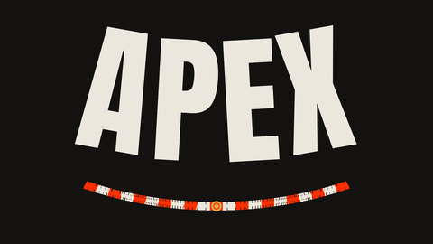

European Le Mans SeriesKalender & Zeitplan
Kalender – alle Rennen mit Startzeiten in deutscher Zeit und Sender.
Für Handy, Google oder Outlook – aktualisiert sich automatisch
Saison auf der Karte
Kartengrundlage: Natural Earth (gemeinfrei)
Saison 2027abgeschlossen
6 Rennen und ein Test
Vorläufiger Kalender. Startzeiten veröffentlicht die European Le Mans Series meist erst kurz vor der Saison.
-
Ganztägig – Uhrzeiten nicht veröffentlicht.
Test in Kalender -
Die Sessionzeiten folgen, sobald der offizielle Zeitplan vorliegt.
-
Die Sessionzeiten folgen, sobald der offizielle Zeitplan vorliegt.
-
Die Sessionzeiten folgen, sobald der offizielle Zeitplan vorliegt.
-
Die Sessionzeiten folgen, sobald der offizielle Zeitplan vorliegt.
-
Die Sessionzeiten folgen, sobald der offizielle Zeitplan vorliegt.
-
Die Sessionzeiten folgen, sobald der offizielle Zeitplan vorliegt.
Saison 2026abgeschlossen
Der Kalender 2026 ist noch nicht veröffentlicht. Wer die Termine mit dem eigenen Kalender verbindet, bekommt sie automatisch, sobald sie feststehen.
Wo schauen?
Deutschland
Laut ACO laufen die Rennen weltweit kostenlos auf dem YouTube-Kanal der ELMS und auf FIAWEC.tv. Ein Fernsehsender für Deutschland ist in den offiziellen Angaben nicht genannt.
Österreich
Wie in Deutschland: kostenlos auf dem YouTube-Kanal der ELMS und auf FIAWEC.tv.
Schweiz
Wie in Deutschland: kostenlos auf dem YouTube-Kanal der ELMS und auf FIAWEC.tv.
Stand: Seite der ELMS auf lemans.org (ACO); die Senderliste der Serie (europeanlemansseries.com) war nicht abrufbar. Geprüft am 20.11.2026.
Regeln
Europäische Langstreckenserie des ACO: Prototypen und GT3-Autos in vier Klassen, sechs Rennen über je vier Stunden.
Serie
Die European Le Mans Series gibt es seit 2013. Veranstalter ist der Automobile Club de l’Ouest (ACO), der auch die 24 Stunden von Le Mans ausrichtet. Eine Saison hat sechs 4-Stunden-Rennen auf europäischen Strecken, von Barcelona bis Portimão.
Klassen
Es starten Prototypen der Klassen LMP2 und LMP3 und GT3-Autos der Klasse LMGT3; LMP2-Teams mit Amateurfahrern werden zusätzlich in LMP2 Pro/Am gewertet. Die Fahrer reichen von als Bronze eingestuften Amateuren bis zu Profis.
Le Mans
Neben den Titeln geht es um automatische Einladungen zu den 24 Stunden von Le Mans im folgenden Jahr.